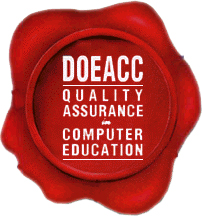
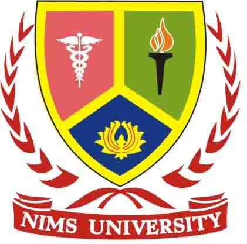
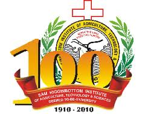

Affiliations Acquired
DOEACC
 DOEACC Society is implementing a joint scheme of All India Council for Technical Education and Department of Information Technology (formerly Department of Electronics (DOE)), Government of India. The objective of the Scheme is to develop quality manpower in IT by utilizing the expertise available with the computer training institutes who are granted accreditation for conducting specified Levels of courses, subject to their meeting well-defined norms and criteria.know more
NIMS
 Nims UNIVERSITY is steered by world renowned scientist Prof. (Dr.) Balvir S. Tomar, who is a Former Professor, Head & Director, Institute of Pediatric Gastroenterology, S.M.S. Medical College, Jaipur and has been awarded various International & National level Fellowships & Awards. He is a member of International & National level GI/Medical Societies like NASPGN, APPSPGAN, ISPGN, GAI & IAP. He had been Investigator / Co-investigator in research projects funded by DST, ICMR, WHO, UNICEF. He is Consultant in Pediatric Gastroenterology and Hepatology, experienced in teaching of U.G. & P.G. medical, nursing, dietetic & paramedical students. He has been on the panels of evaluators of member of Country programmes, IMCR & WHO and also involved in setting up of several diagnostic and research techniques in Pediatric Gastroenterology, in-vetro organ culture system, hepatitis viral infections, surviving tests for metabolic liver diseases in children.know more
SHIATS
 Sam Higginbottom Institute of Agriculture, Technology & Sciences (SHIATS), is striving to acquire a place in the arena of International Science and Technology while holding a pioneering status in India. The University offers thirty nine (39) Undergraduate Programmes, hundred and one (101) Postgraduate programmes, eighteen (18) Diploma programmes and Doctoral programe in various disciplines. The teaching and research faculties of the University have highly qualified professionals, trained in specialized areas of Agricultural Science and Technology with several of them holding Post Graduate degrees & Doctoral Degrees from universities abroad. know more